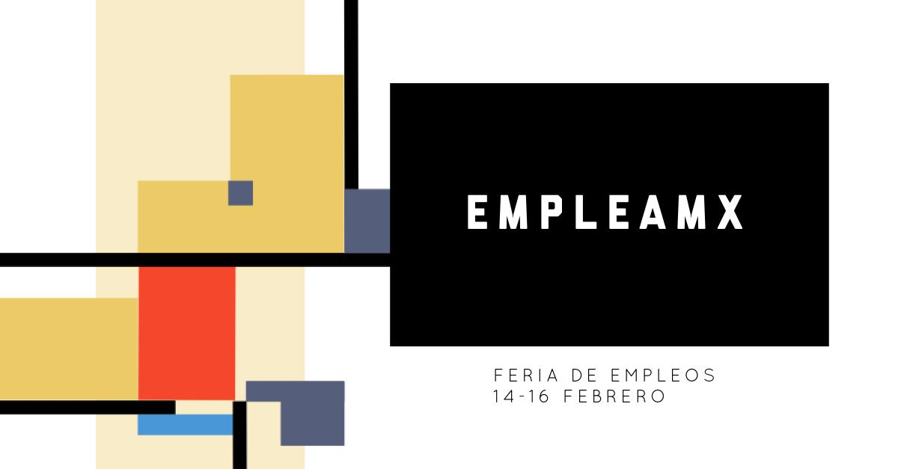

Exists a lot of people with abilities that cannot be shown. We want to make a festival, a diversity of jobs, give the opportunity to people who is unemployed and also, businesses whose are looking for employees. Our festival is called EmpleoMx, we imagine a big space like expo guadalajara, so every big job and every person can show their own work and talent. It will be conferences about how to get a job, how to have a successful interview, advices and assessing, businesses looking for employees, business men who wants to invest, ideas of new businesses; and organizations of entrepreneurship.
In Mexico, once a year the government makes job fairs, exists two types: virtual or face-to-face.For now, the festival will be in Guadalajara. But, if every state has one festival per year, it can change the unemployed problem in all Mexico, and also the many informal jobs. Is specially made for graduates.
